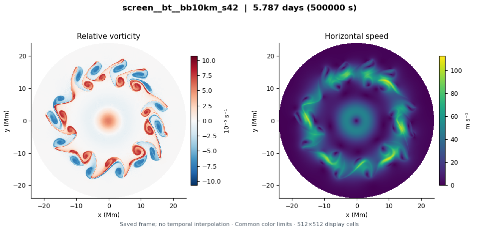

How to read the gallery
- Every image is an actual saved time. Sparse snapshots can show changing structure but do not resolve all motion between frames.
- Vorticity and speed color scales are shared across this gallery; each run uses its configured science disk.
- Mode curves describe the measured jet centreline. Tracker gaps remain missing, and complete coverage alone does not guarantee a continuous physical jet.
- Pattern speeds need a declared rotation frame and a valid coherent signal. This gallery does not fit drift from late rolled-up fields.
- Comparisons should use matched physical times and account for all configuration differences. Completion is not timestep, spatial or physical validation.